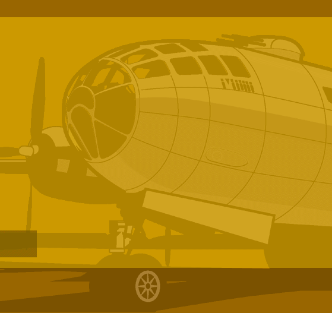

| |
 |
| |
|
JOHN SABOTTA
employment history 2002 - 2004Graphic Artist and Web Designer – Cantrall and Associates Web and print design for Cantrall and Associates, a full service associate management company in Seattle. Clients included the American Orthopaedic Foot and Ankle Society, the Eastern Orthopaedic Society and many others. Production work and advertisement design and layout for the Foot and Ankle International, the official scientific journal of the AOFAS. 2001 - 2002 1993 to 1997 1990 to 1993 1984 to 1990 1990 to
present http://www.ptforkids.org/ http://www.clinicient.com/ http://www.pugetorthorehab.com/home.htm http://www.womancareinc.com/ http://www.stricklandpt.com/ For local Seattle video production house Cardinal
Media, I created title graphics and animation for a series of traffic
safety public service spots, and several of his traffic and railroad
safety videos. Highlights included simulating railroad stopping distances
in Lightwave 3D for Cardinal Media’s “Roll Call: Operation
Lifesaver” video, and using After Effects to make a dog “talk”
for a Washington Traffic Safety Commission Video. Magazine cover illustrations for local alternative
and literary magazines, including Throwrug and Koon Woon’s Chrysanthemum Animation in Macromind Director for the Microsoft Network “MINT” on-line magazine, in collaboration with internationally acclaimed illustrator Aidan Hughes. Also with Aidan Hughes, I produced animation and designed effects for a 20 second station identification spot for the Locomotion cable channel of Florida. Designed book covers for Peanut Butter Press of Seattle, produced magazine cover illustrations for local alternative and literary magazines, including Throwrug and Koon Woon’s Chrysanthemum education Art Institute of Seattle - graduated in 1983
receiving a degree in Commercial Trained in illustration, paste-up,
layout, design skills and airbrush rendering, with instructors such
as Jim Scott, William Cummings and Fred Griffin |
|
 |
|